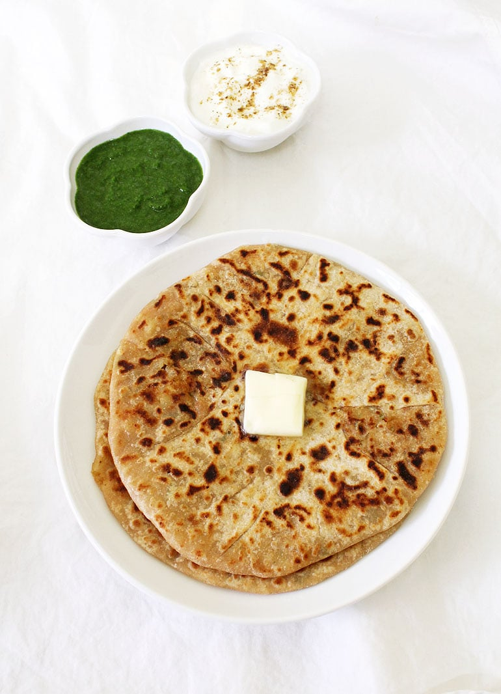

Aloo Paratha

Desciption:
Aloo paratha is one of the most popular breakfast dishes throughout western, central and northern regions of India. Aloo-stuffed parathas consist of unleavened dough stuffed with a spiced mixture of mashed potato, which is rolled out and cooked on a hot tawa with butter or ghee. Paratha's originated in Peshawar and then spread all over the former northern parts of India. It began as a wholesome meal often eaten at breakfast.
Ingredients
FOR THE DOUGH
- 1 cup whole wheat flour
- 1 cup refined flour or 1 cup maida flour
- 1 teaspoon salt
- 1 teaspoon oil
- 1 teaspoon carom seeds or 1 teaspoon ajwain water, as required (in my dough maker it takes around 1 cup water)
FOR THE POTATO STUFFING
- 3 medium potatoes (boiled and peeled)
- 1 green chili pepper, finely chopped
- 1 tablespoon coriander leaves, finely chopped
- 1⁄4 teaspoon garam masala powder
- 1⁄4 teaspoon red chili powder (adjust it based on how spicy you want it)
- 1 inch grated ginger
- 1 teaspoon chat masala
- salt, to taste and 6 tablespoons oil
Instructions:
- Put all the dough making ingredients in your food processor with the dough paddle. You will get a soft and elastic dough. Set aside and let it rest until we prepare the potato stuffing.
- In the food processor put all the ingredients required for the potato stuffing and pulse it until it all mixes and comes together well. Potato should be minced.
- Divide dough 7-8 medium balls, dust the floor and roll the balls into small circle with the help of a rolling pin.
- Hold the rolled dough in your palm and place 2-3 tbsp of potato filling in the center. Use your judgement when it comes to filling, you should be able to close the dough with filling inside. Pinch the top of the dough to seal it well.
- Flatten the dough lightly with your hands and roll it out gently into 6-8 inch circle. Dont forget to sprinkle flour before rolling the dough.
- Cook the paratha on a tawa at medium-high heat. When one side is brown, flip the paratha and brush it with oil. Repeat the same process with other side too. Cook well on both sides till you see golden spots. Your paratha is ready. Top it with butter and serve hot with pickle or yogurt.